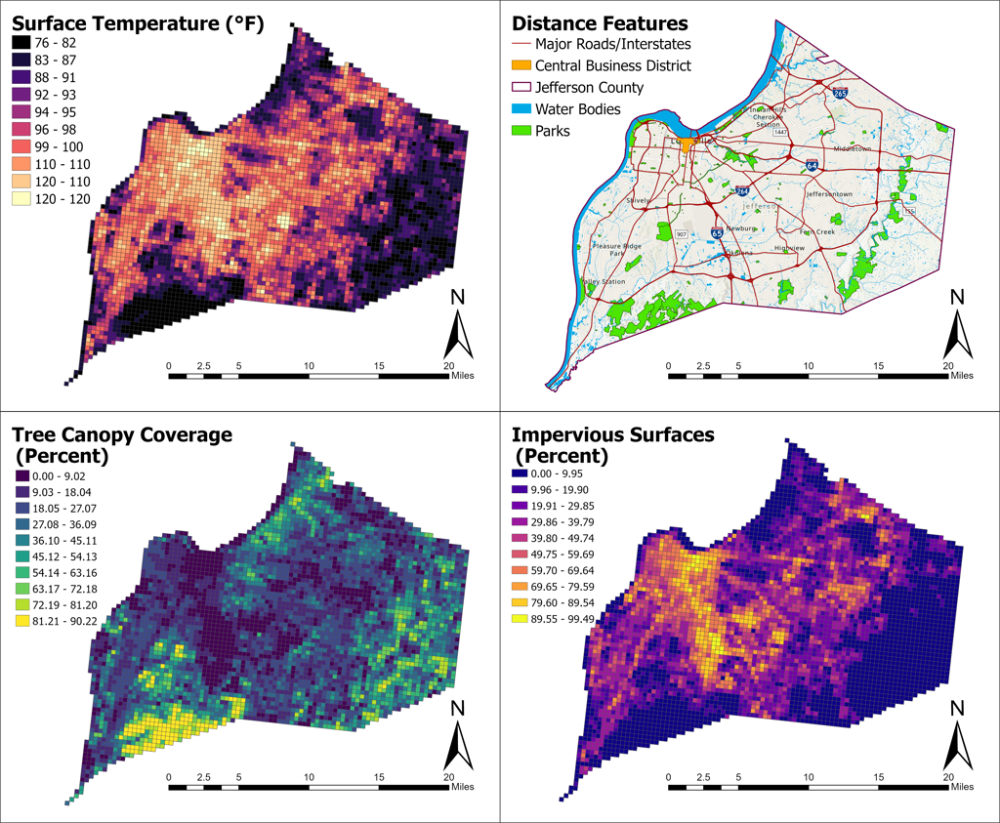
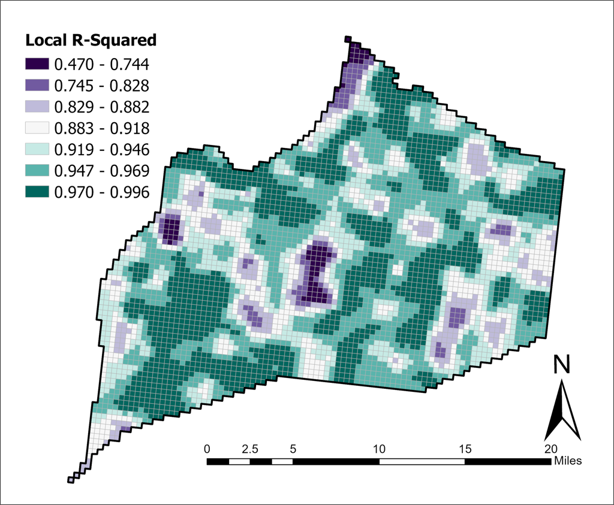

Project
Urban Heat Island Modeling in Louisville Using Geographically Weighted Regression
Abstract
Urban Heat Island (UHI) refers to a phenomenon where urban areas experience higher temperatures compared to their rural surroundings. This is primarily driven by human activities and the influence of anthropogenic landscapes on local climate. UHI can have significant implications for human health, energy consumption, air quality, and ecological processes in urban areas.
Through the use of high-resolution spatial data and advanced geospatial techniques, UHI patterns can be better understood. UHI displays a complex dynamic between environmental factors and location, with existing literature identifying key variables but leaving gaps in understanding the localized correlation and interplay among multivariate drivers. This study examined localized influences of tree canopy coverage, impervious surfaces, land use/cover, building density, and other environmental factors on surface temperature patterns in Louisville, Kentucky.
Significant environmental factors were selected and Geographically Weighted Regression (GWR) was used to interpret spatially varying relationships between surface temperature and explanatory variables. Imperviousness, building density, and tree canopy coverage were expected to have strong spatial relationships with surface temperature due to their roles in heat absorption, retention, and local microclimate modification. This study underscores the importance of considering spatial variability in UHI dynamics when developing targeted interventions and policies for climate-resilient and sustainable urban communities.
Project Details
Maps and Figures

